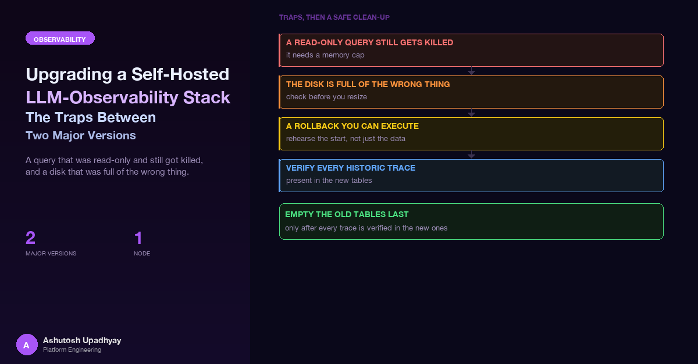

Langfuse v3 to v4 and ClickHouse 24.8 to 26.4 on a single node. A query that was "read-only" and still got killed, a disk that was full of the wrong thing, and the checks that let me empty the old tables only after every historic trace was verified present in the new ones.
While I was still reviewing the upgrade plan, a reviewer agent ran a query against the observability database. It was read-only in every sense that matters to a code reviewer: a SELECT, no writes, no DDL. It scanned two weeks of root spans, used FINAL to get deduplicated rows, and read the input column to look at what the agent had been asked. The database hit its memory limit at roughly 90% of the pod's allowance, and the server's overcommit tracker killed the query.
The query died, which was the good outcome. What I could not rule out was that it had squeezed live trace ingestion for a few seconds on the way. On a single-node ClickHouse that shares one small memory budget between the reader and the writer, "read-only" describes the SQL, not the load.
That incident set the tone for everything after it. This post is about the upgrade of a self-hosted Langfuse (v3 to v4) and the ClickHouse underneath it (24.8 to 26.4), now complete, and the traps between the two versions. An internal agent platform that sends OTLP traces was the only producer. The scope of the claim I will make is narrow and I will repeat it where it matters: historic traces were verified present in the new tables (unique-count equality plus a per-month anti-join, zero missing) before the old tables were emptied. That is a statement about a verification, not about the whole migration being free of surprises. There were several.
What this is not. It is not a tour of v4: the earlier Langfuse post covers what the platform surfaces, and the observability-layers post covers where tracing stops and metrics begin. This one is the operational side.
Langfuse v4 moves to an observations-first data model: a new, wide, mostly immutable table that removes joins and read-time deduplication. Table loads that took seconds take milliseconds, and the documentation promises dashboards at least ten times faster on long ranges. v3 receives security patches until the end of January 2027, so staying put had a deadline.
The price sits in the requirements: ClickHouse 25.12 or newer (26.4 recommended) when I was on 24.8, a jump with no documented downgrade path, so rollback is a snapshot restore, not an image revert; the latest v3 first with every background migration finished; a backfill that roughly triples the Langfuse data footprint; and read APIs that disappear, since the v1 endpoints that list traces and daily metrics return 404 once the old write path is off. The table near the end maps each step to its risk and control.
The fix after the opening incident was a rule applied to every human, script and agent that touches the database: every query gets a hard per-query memory ceiling, and no FINAL over wide time ranges. The ceiling was about an eighth of the pod's memory limit at the time (the limit was raised later, see Trap 3).
-- Every ad-hoc query against the analytics store carries a cap.
SELECT count()
FROM traces
WHERE timestamp > now() - INTERVAL 1 DAY
SETTINGS max_memory_usage = 500000000; -- ~1/8 of the pod limit at the time
-- Prefer metadata and counts over scanning wide columns.
SELECT table, sum(bytes_on_disk) AS bytes
FROM system.parts
WHERE active
GROUP BY table
ORDER BY bytes DESC
SETTINGS max_memory_usage = 500000000;Prefer system.parts and plain counts over scanning input or output, the widest columns in an LLM trace store, and put the rule into every prompt that might let an agent touch the database, because an agent will not infer it. It is the lesson of the in-flight context overflow post again: the danger is an unbounded operation on a shared resource.
A cap protects the writer, not just the reader. When ingestion and ad-hoc queries share one server, a query with no ceiling is a denial-of-service on your own traces. The cap belongs in the runbook for the upgrade itself, because the upgrade is when people run the most queries.
The plan assumed the backfill would need disk, and the first instinct was to grow the volume. I audited the disk first. The disk was just over half full, and the Langfuse data itself was a small slice of that. ClickHouse's own system logs were about 16 times the size of the Langfuse data: the server text log alone was roughly half of all system-log volume, followed by query logs, processor profiles, internal span logs and metric logs. They were also growing steadily, enough to fill the disk within a few months regardless of the upgrade.
Two consequences:
So the first change was a retention policy for the system log tables, written as its own step before the ClickHouse image bump, so a config mistake would be isolated from a version mistake. It was a single drop-in file under config.d, mounted with subPath. That detail matters: mounting a ConfigMap over the whole directory hides the stock files in it, including the one that sets the listen address.
<clickhouse>
<query_log>
<ttl>event_date + INTERVAL 14 DAY DELETE</ttl>
</query_log>
<text_log>
<level>warning</level>
<ttl>event_date + INTERVAL 14 DAY DELETE</ttl>
</text_log>
<!-- nothing reads this one; remove it instead of giving it a TTL -->
<opentelemetry_span_log remove="1"/>
</clickhouse>A system-log section whose stock configuration already declares an <engine> must never also get a <ttl>. ClickHouse refuses to start on that conflict. I found this by reading the stock config.xml of both the running version and the target version (by running the target image locally and printing the file) before writing anything. A section that has an engine has two honest options: replace the engine element in full with the TTL inside it, or leave the section alone and trim it by hand. Where nothing reads the table, removal is simplest.
One deliberate exception to "trim everything": the query log stays. Langfuse v4 reads it for usage detection, so deleting it would change application behaviour, not just reclaim space.
Putting a TTL in config does not mean the TTL is on the table. With the default setting that controls preparing system-log tables at startup switched off, ClickHouse renames and re-creates a system log table only on its first flush. A log that is rarely written would still carry its old definition indefinitely, silently without a TTL. The gate therefore was:
SYSTEM FLUSH LOGS once, deliberately.system.*_log table from system.tables (excluding the renamed ones and the removed one), and read SHOW CREATE TABLE for each. The TTL must be in the stored definition, not just in my file.It is the same rule as the stored-policy post, in a different system: check the object the server stored, not the file you wrote. After the 26.4 bump the same check ran again, because 26.x changes some log tables' columns and triggers a second rename to a new numbered table.
Only then did I drop the renamed old tables (except the renamed query-log copies, which stayed until after the cutover because v4 reads them for usage detection) and the removed one. Disk use fell by roughly 85%. It was the cheapest thing in the whole upgrade and bought the most room.
Because the ClickHouse jump has no downgrade path, and because once the new version has started on a data volume, reverting the image line in Git is not a rollback (the old version cannot read parts the new one wrote), the rollback is a snapshot restore. I took volume snapshots of the data and log volumes and a database snapshot of the Postgres side before touching anything, and I wrote the restore runbook before the first change, because a runbook written during an incident is a guess.
The runbook is mostly a list of ways to make a bad day worse, with a control for each:
Delete. Deleting a claim whose volume has that policy deletes the underlying disk. Patch the volume to Retain first and verify it, so a wrong step is undoable.I never had to run it. Its value was that every later step could be judged against a concrete answer to "what happens if this fails": either a cheap forward fix, or a restore with known costs.
Before the 26.4 image went live I rehearsed an in-place start in a local container, on a throwaway data directory built from the live table definitions and the new retention file, using the same non-root user as production and a root-owned data directory, which is where "works on my laptop" upgrades usually fail. I also read the backward-incompatible change list against my config and checked the default user's grants with SHOW GRANTS. The plan assumed a grant would be needed, but that user comes from a read-only users file where SQL grants are impossible, and the read showed none were missing.
I also roughly doubled the database's memory limit and set the request equal to it; resident memory after the start settled around 15% of the cap.
The platform sends traces over OTLP with the ingestion-version header that selects the real-time v4 path. That header decides the behaviour of the migration. Spans sent with it skip the server-side attribute propagation that would otherwise copy user, session and tags onto the root of the trace, and the dual_write migration mode cannot compensate.
Looking at the live data, about two thirds of trace roots were plain HTTP server spans created by the web framework, which carry none of the Langfuse attributes. The agent framework only puts user, session and tag attributes on its own agent, cycle, model and tool spans. In v4 a root with no user, session or tags is a trace nobody can filter. And because the backfill covers only data from before the switch, anything ingested without attribution afterwards would stay unattributed permanently.
So the producer fix had to ship before the dual-write step. The design had a few details worth copying:
langfuse.user.id, langfuse.session.id, tags, plus input when the request starts and output at the end of the innermost generator. The server span stays open until the final response body, so the output can be attached at the end.re.search on the full URL, so an unanchored entry also excludes any route that merely contains the text. Anchor every entry, and add a test that the real query routes are not excluded.Langfuse's migration offers a mode that writes every new span to both the old tables and the new events tables. In that mode a rollback to the old write path loses nothing, because everything in the new tables is also in the old ones. I ran in dual mode first, with the historic backfill off, then enabled the backfill only after the new version had been healthy for an hour.
The rollback options were, in order of preference: roll forward to the legacy write mode, or rewind the schema with the migration tool's goto command. For the rewind, revert the images in Git first and then run the command from a surviving v4 pod: with self-heal on, the surge pod crash-loops while the v4 pods keep serving, which leaves a pod to run it from.
The backfill itself had a stop rule: pause it if disk use passed a set threshold.
The backfill converts historic traces into the events model. Because a v3 trace need not have a single root observation, it synthesises a virtual root span per trace, with an id derived from the trace id. That is sensible, and it produced a subtle bug in my reads. For a share of historic traces the real root had been re-parented under the virtual root, so the trace had two roots. For the rest, the virtual root was the only root. A query that asks for root observations therefore counts some traces twice and returns synthetic rows for others.
The fix was a cutoff timestamp in the application configuration: before it, count virtual roots; after it, count real roots. I tested both shapes on live data, not just on fixtures, since the two shapes are exactly what a fixture written from the documentation would not contain. The live counts matched the old path day for day afterwards.
Test the transform's output shape, not its happy path. A backfill that invents rows is a legitimate design. It becomes a bug the moment the consumer assumes every root is real. Look for the synthesised rows in the target before you build queries over it.
The application behind the traces had an admin page that listed recent prompts and another that showed daily cost. Both called Langfuse endpoints that return 404 after cutover. Their replacements are not drop-in:
filter expression, which overrides the fixed query parameters, and a time range is required.The deployment pattern was a read switch with two values, legacy and v2:
# Lenient on purpose: an unknown value must not take the page down.
# Final form; before the cutover an unknown value fell back to legacy.
def read_api_mode(raw: str | None) -> str:
return "legacy" if (raw or "").strip().lower() == "legacy" else "v2"
# Both modes return the same contract so the UI can ship before the flip:
# {"data": [...], "meta": {"next_cursor": "..."}}
# In legacy mode the cursor is an opaque encoding of page + 1.It shipped as legacy while the stack was still on v3, so the new UI and the old backend worked together from day one. A test asserted zero requests to the v2 observations and metrics endpoints while the switch was legacy, plus a positive check that the prompts endpoint still went out. After v4 was running I recorded the exact requests the release built, ran them read-only against the live system, saved the responses as fixtures, and checked the parsers against them, plus one sanity number (a day's user-query count) against the legacy path. Only then did the default flip; at final cutover a garbage value also means v2, since the old side no longer exists.
The same discipline applied to the LLM-as-a-judge evaluators. Trace-level evaluators stop working once only the events model is written. I checked instead of assuming: all three were already observation-level rules, with no upgrade banner, and after the switch to v4 their scores kept arriving, attached to observations.
Changing a value in the ConfigMap restarts no pod. Every flip got a restart-trigger annotation bump on both the web and worker Deployments in the same commit. The worker had no such annotation, so adding it was part of the first step.
Langfuse exposes a health check that fails when event propagation is stuck. I wired it as the worker's readiness probe, not its liveness probe. With one worker, a liveness failure would restart the only consumer and stop all ingestion, turning a lagging queue into an outage. Readiness takes it out of rotation without killing it. That is the same shape of mistake as the liveness-killed-mid-request case, applied to the thing that ingests traces.
The v4 migrations run when the first new web pod starts. If that pod is killed mid-migration, the schema is left marked dirty and every web pod then crash-loops. So the gate was to watch the first pod's log until the migration script finished, and then read the migrations table for the latest version with the dirty flag at zero. Before that, a gate on the last v3 step: schema version 37 applies MATERIALIZE INDEX as background mutations, so I waited for system.mutations to show zero unfinished before starting the ClickHouse jump.
The latest v3 release on GitHub was 3.225.12, but the latest published image was 3.225.11. I pre-pulled every tag I planned to deploy through the registry mirror the cluster uses and treated a failed pull as a gate failure, so no pod lands in ImagePullBackOff mid-upgrade.
/tmp came up as an empty directory. A rehearsal then "works" against no data. Check the file-sharing list, or mount from your home directory.The old v3 tables kept holding every historic trace after the cutover. They were dead weight and still a source of doubt. Emptying them was the one irreversible step in the sequence, so it was preceded by a comparison with a claim narrow enough to be checkable:
-- One month at a time, so every query stays under the memory cap.
SELECT count() AS missing
FROM (
SELECT DISTINCT id
FROM traces
WHERE timestamp >= toDateTime('2026-08-01')
AND timestamp < toDateTime('2026-09-01')
) AS old_ids
LEFT ANTI JOIN (
SELECT DISTINCT trace_id AS id
FROM events_full
WHERE start_time >= toDateTime('2026-07-31') -- small margin either side
AND start_time < toDateTime('2026-09-02')
) AS new_ids USING (id)
SETTINGS max_memory_usage = 500000000;The per-month split is also how the check respects Trap 1. In the final run, both comparisons were clean: counts equal, and zero missing in every month. The oldest trace was the same on both sides. Only after that did I empty the old traces and observations tables (the tables themselves stay). The scores table and the new events tables were untouched. I then checked that the Langfuse pods had zero restarts, the worker logged no errors, and the admin pages returned the same day-by-day counts as before.
That proves every historic trace id was present in the new store before the old one was emptied, and nothing beyond it.
| Step | Risk | Control |
|---|---|---|
| Audit the disk | Growing a volume that cannot grow; hoarding logs | Size tables via system.parts; retention first |
| System-log retention config | Server will not start (TTL on an engine section); TTL never attached | Read both stock configs; own step; flush, then SHOW CREATE TABLE on every log table |
| Snapshots and restore runbook | No downgrade; reclaim policy deletes the disk; self-heal fights the restore | Runbook first; Retain; pause the parent app; same-zone volume |
| Latest v3 and its migrations | Pending mutations and background migrations collide with the next step | Zero unfinished migrations and mutations; pre-pull tags |
| ClickHouse 24.8 to 26.4 | Irreversible after first start; memory tight; hidden incompatibilities | Local rehearsal as the production user; compatibility list read; snapshot rollback; memory request equal to limit |
| Producer fix | Roots without user, session or tags, permanently | Capture root span at entry; size cap; anchored exclusions; ship first |
| Langfuse v4 in dual mode | Dirty schema if a pod dies mid-migration; ingestion outage from a bad probe | Watch first pod's migration; dirty = 0; readiness-only probe; restart-trigger on both |
| Historic backfill | Disk pressure; virtual roots double-count | Stop rule on disk; cutoff timestamp; live-data shape tests |
| Read-path change | 404s and subtly different semantics | Two-mode switch; one contract; fixtures from built requests |
| Cutover to events-only | Old endpoints vanish; trace-level evaluators stop | Evaluators checked; expected 404s asserted; other endpoints re-checked |
| Empty the old tables | Irreversible; undetected missing history | Count equality plus per-month anti-join, zero missing |
The thing I would have liked on day one is a way to rehearse the consumers, not just the database. Everything that made this upgrade careful, the request shapes, the cursor semantics, the root-versus-virtual-root distinction, the fixtures, came from running the application's real requests against a live instance of the new version.
The next step is to turn that into a contract suite that lives in CI: a disposable Langfuse container pinned to the next candidate version, fed a small synthetic trace set that includes both root shapes, with the application's exact read requests replayed against it and the responses checked against recorded fixtures. Then the next major version starts with a list of failing tests rather than a close reading of release notes, and the fixtures double as documentation of what the application actually depends on.
FINAL, in runbooks and agent prompts alike.SHOW CREATE TABLE for every log table; never put a TTL on a section that has an engine.Retain, pause the parent GitOps app.Disclaimer: The views and opinions expressed in this post are my own and do not represent those of my employer or any organisation I am associated with.